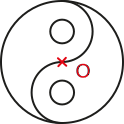

Activité Introduction
-
Voici une première figure.
-
Reproduire sur une feuille quadrillée cette figure.
- Construire le point A' image du point A par la symétrie d'axe (d).
- En procédant de la même manière pour tous les sommets de la figure rose, construire son symétrique par rapport à l'axe (d).
-
Voici une seconde figure.
-
Reproduire sur une feuille quadrillée cette figure.
- Construire le point A' image du point A par la symétrie de centre O.
- En procédant de la même manière pour tous les sommets de la figure rose, construire son symétrique par rapport au centre O.
- Que peut-on dire du point O pour le segment [AA']
Symétrie Axiale :
Médiatrice :
La médiatrice d'un segment est la droite perpendiculaire à ce segment et qui le coupe en son milieu.
Exemple :
Propriétés
- Si un point est situé sur la médiatrice d'un segment, alors ce point est équidistant des extrémités de ce segment.
- Si un point est équidistant des extrémités d'un segment, alors ce point appartient à la médiatrice de ce segment.
Exemple :
Définition :
Dire que deux figures sont symétriques par rapport à une droite signifie que, en effectuant un pliage le long de la droite, les figures se superposent.
Remarque :
- Dans une symétrie axiale, l'axe de symétrie est la médiatrice de tous les segments reliant un point et son image.
Constructions :
A la règle et l'équerre :
Propriétés
Lors d'une symétrie axiale les longueurs, les alignements et les angles sont conservés.
Remarque
- Le symétrique d'un point se trouvant sur l'axe de symétrie est lui-même.
Symétrie centrale :
Définition :
Dire que deux figures sont symétriques par rapport à un point signifie que, en effectuant un demi-tour autour de ce point, les figures se superposent.
- Le point O est appelé le centre de symétrie
-
La figure bleu est le symétrique de la figure rouge par rapport à O
Construction :
Dire que deux points M et M' sont symétriques par rapport à un point O signifie que le point O est le milieu du segment [MM'].
Construction a la règle et au compas :
Propriétés :
Propriétés :
- Si trois points sont alignés, alors leurs symétriques par rapport à un point sont aussi alignés.
- Si deux segments sont symétriques par rapport à un point, alors ils sont parallèles et de même longueur.
- Si deux angles sont symétriques par rapport à un point, alors ils ont la même mesure.
- Si deux figures sont symétriques par rapport à un point, alors elles ont le même périmètre et la même aire.
Axe et centre de symétrie d'une figure.
Axe de symétrie :
On dit qu'une droite est un axe de symétrie d'une figure lorsque la figure et son symétrique par rapport à cette droite sont confondus.
Exemple :

Le droite (d) est un axe de symétrie de la figure.
Centre de symétrie :
On dit qu'un point est un centre de symétrie d'une figure lorsque la figure et son symétrique par rapport à ce point sont confondus.
Exemple :

Le point O est un centre de symétrie de la figure.